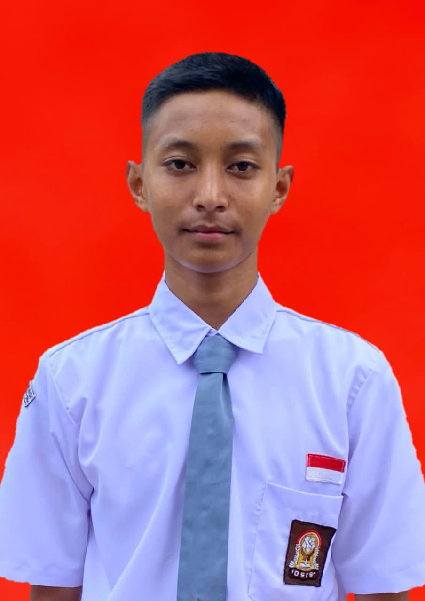

2024 — 2027
SMA Gunung Madu
Kelas XII • Jurusan IPA
Sedang menempuh pendidikan menengah atas.

PELAJAR SMA • CALON PENGUSAHA
Pelajar SMA yang tertarik pada bisnis, kepemimpinan, dan pengembangan diri.
01 / TENTANG SAYA
Saya adalah pelajar SMA yang memiliki semangat untuk terus belajar, mengembangkan kemampuan, dan mencari pengalaman baru. Melalui pengalaman berorganisasi sebagai Ketua Paskibra, saya belajar tentang kepemimpinan, kedisiplinan, tanggung jawab, dan kerja sama tim. Saya memiliki ketertarikan pada dunia bisnis dan kewirausahaan serta bercita-cita membangun usaha sendiri di masa depan.
02 / PENDIDIKAN
2024 — 2027
Kelas XII • Jurusan IPA
Sedang menempuh pendidikan menengah atas.
03 / PENGALAMAN & PRESTASI
2024 — 2026
Memimpin anggota, mengikuti latihan rutin, menjaga kedisiplinan, dan membangun kerja sama tim.
Prestasi olahraga
Prestasi dalam kompetisi bola voli antarsekolah.
Pengalaman organisasi
Mengikuti proses seleksi Paskibra tingkat kabupaten.
04 / KETERAMPILAN & MINAT
05 / KONTAK
Terbuka untuk berkenalan, berbagi ide, dan membangun koneksi baru.